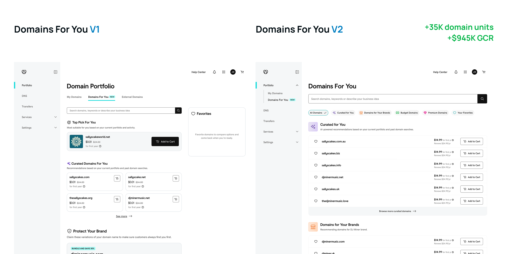
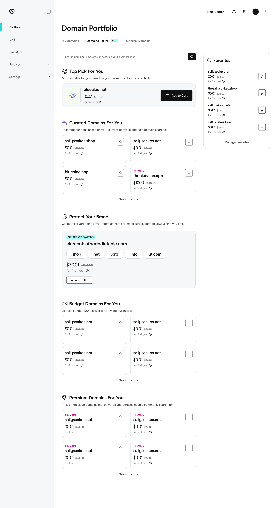
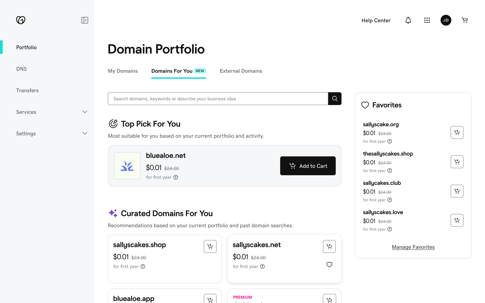
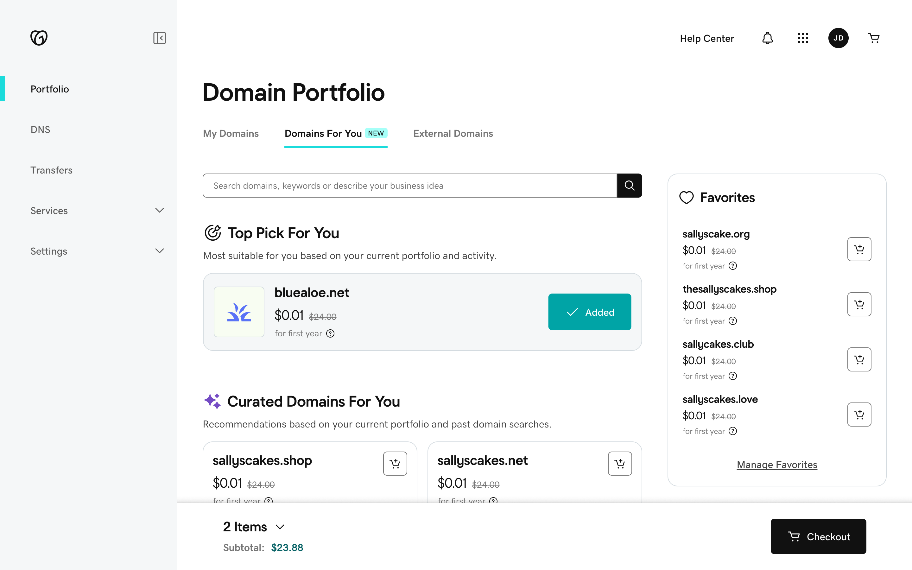
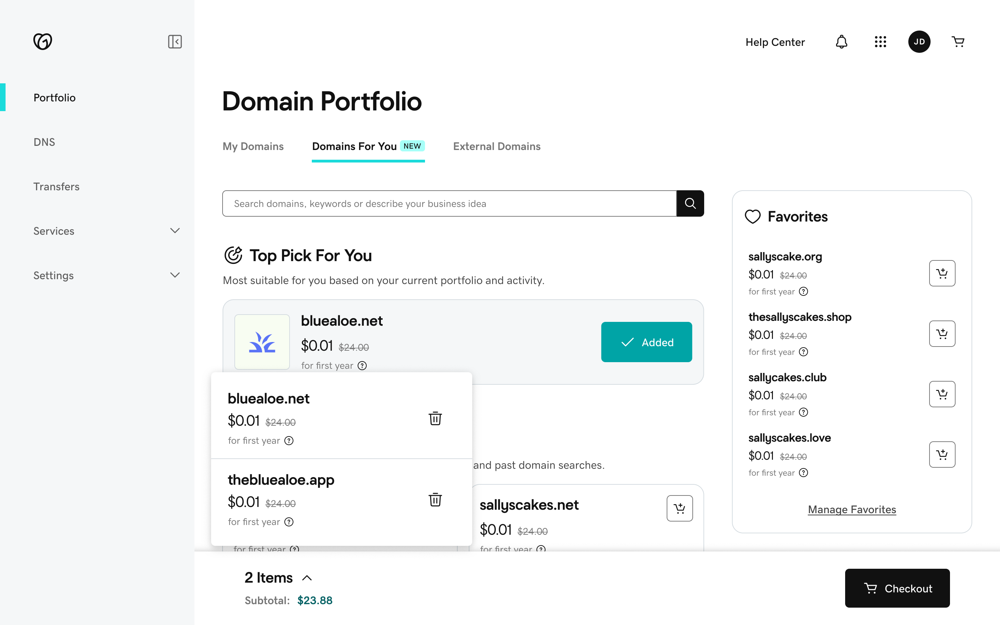

GROWTH UX
Personalized domain namerecommendations.
From portfolio upsells to intent-led discovery.
- Role
- Design Lead · end-to-end design
- Scope
- Strategy, interaction & visual design
- Product
- Domains For You
Domain Portfolio’s acquisition prompts were winning experiments, but customer sentiment suggested we upsold too much. I proposed a dedicated, personalized destination. V1 showed promise, but only 8.64% of assigned shoppers found it, so V2 rebuilt discovery and browsing. It won for small businesses.
annualized new domain registrations
SMB rollout
reported GCR addition associated with the SMB result
Statistically significant registration win · rolled out to SMBs

OPPORTUNITY
Opportunity Space
Domain Portfolio was primarily a place to manage domains. An inline banner, search and recommendation prompts also helped customers acquire more domains.
These channels had won earlier experiments. The challenge was growing their contribution while responding to user-feedback about excessive upselling.
How could recommendations earn attention without interrupting the task?
domain acquisition channel: an inline banner placed between owned-domain rows.
An unmatched search leads to “Check Availability,” then a purchase flow.
Recommendation prompts open a separate browsing flow.
DISSECTING THE PROBLEM
A relevance problem.
A space to solve it.
I broke the banner journey into three questions: would customers notice it, would the offer fit, and would the message give them a reason? Small businesses needed a connection to their brand; investors were looking for acquisition opportunities.
I proposed a dedicated destination with more relevant inventory. Proactive recommendations could use existing customer context instead of requiring a new search.
A relevant offer deserves a dedicated place.
Banner Blindness
Could the offer be overlooked inside the domain list?
Domain <> Offer mismatch
Was the domain associated or the offer right for this customer given that they couldn't choose another?
Messaging
Did the message explain why this domain is valuable for that particular user, in the space available?
LAUNCH
Domains For You V1
V1 added personalized domain recommendations as a new tab inside Domain Portfolio. The trade-off was breadth versus density: my PM wanted more inventory in view; I wanted the full range of categories visible within a scroll. We increased the previews and kept the structure.
The test told two stories. Customers who opened DFY added a domain to cart about 16% more often than engaged customers in the control group: an encouraging, directional signal. But only 8.64% of shoppers in the test ever saw DFY, roughly 27K of 316K.
I had framed this as a relevance problem. V1 showed reach had to come first.
Make DFY easy to find before refining what’s in it.
Reach · the problem
8.64%of shoppers in the test ever saw DFY
~27K of ~316K shoppers
Engagement · the promise
+16%more engaged customers added to cart than in control
Directional: customers who explored DFY converted to add-to-cart more often · not a causal lift

Categories on this page
- Top Pick For You
- Curated Domains For You
- Protect Your Brand
- Budget Domains For You
- Premium Domains For You



Acting on a recommendation
- 01
Consider
Save it for later
Hovering a card reveals the favorite.
- 02
Act
Add several, one click each
Buttons switch to the chosen state and the cart bar appears.
- 03
Review
Check the cart without leaving
The cart drawer opens from the bar.
LEARNINGS FROM V1
What the V1 readout
was really saying.
I used a simple growth model to connect the V1 readout to design priorities: audience, intent, discovery and conversion.
It gave the team a shared rationale for V2: improve the routes into DFY, make categories easier to explore, and put more inventory within reach.
Discovery first. Then exploration, then action.
Domain registrationsAudienceIntentDiscoveryConversion
Audience
Who can we reach?
Intent
Why would they buy?
V2 → Exploration: easier to judge fit, with denser lists and dedicated category views
Discovery
Will they find it?
V1’s demonstrated constraintV2 → Access: a persistent navigation home, search entry points
Conversion
Can they act on it?
V2 → Action: a contextual bundle, inline
DOMAINS FOR YOU V2 : DISCOVERY
Give discovery
a permanent home.
I moved DFY into the left navigation and strengthened its discovery cues. The experience became a persistent destination rather than a tab nested in domain management.
I also connected existing search entry points to relevant recommendations, so customers could reach a useful category from the context they already had.
A clearer route in. A recognizable place to return.
Before / A tab nested in domain management.
After / A persistent destination in the navigation.
Search / Starters and recent searches lead to relevant categories.
DOMAINS FOR YOU V2 : CONVERSION RATE
More choice.
Less back-and-forth.
V2 went further toward density. I shifted from small card previews and category modals to denser lists and dedicated category views. Distinct icons and labels were intended to invite exploration without hiding the inventory.
After an add-to-cart action, a contextual bundle appeared inline. The selected domain, remaining options and checkout stayed connected.
From previewing categories to evaluating options.
Narrow the inventory around a brand.
A contextual bundle, without leaving the list.
Mobile / The same lists and actions, in a single column.
IMPACT
A win to scale.
A loss to learn from.
The SMB experiment delivered a statistically significant improvement in new domain registrations and rolled out. The reported annualized impact: 35K new registrations, associated with approximately $945K GCR.
The Investor experience lost on registrations and was rolled back. Auction bids / add-to-cart rose 10%, a statistically significant secondary result. Investors leaned toward auctions and expiring inventory; curation from portfolio history appeared to miss what they wanted now.
Shared UI does not imply shared customer intent.
35K / year
Annualized new domain registrations
~$945K associated reported GCR
Primary metric · statistically significant win
Registration loss
Primary metric: registration loss; rolled back.
+10% auction bids / add-to-cart
Secondary result · statistically significant
Investor V2 / Auction views: valuation, activity and urgency.
Investor V1 / Auctions curated to “match your portfolio”: the assumption the result challenged (interpretation).
08 / Learnings & next steps
Intent changes.
Relevance must, too.
V1 and V2 used the same growth model to decide what to test next. That reasoning carried into two open questions: how to explain the value of additional domains to SMBs, and how to better reflect investors’ current interests.
My contribution was creating clarity—and carrying that reasoning through to the experience.
Small businesses
“Relevant to my brand. But useful for what?”
Make the purpose of owning another domain clearer—not just the recommendation.
Domain investors
“Relevant to my portfolio. But relevant today?”
Test current opportunities against assumptions based on historical ownership.